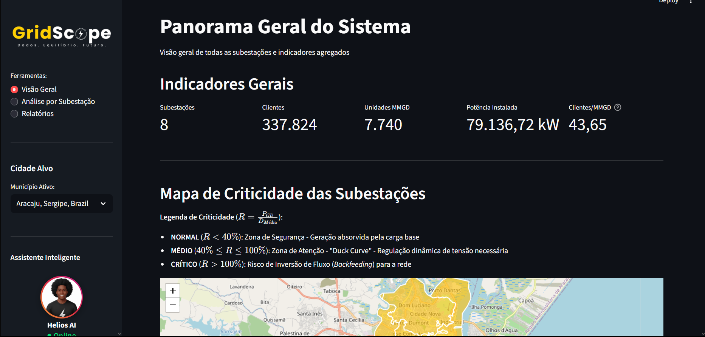
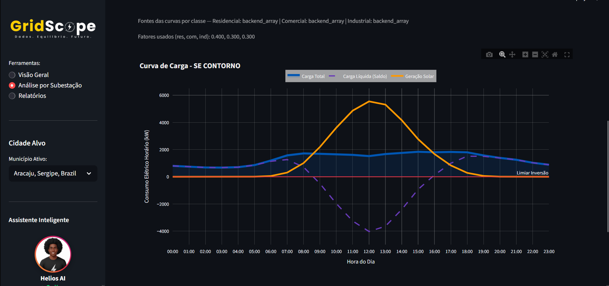
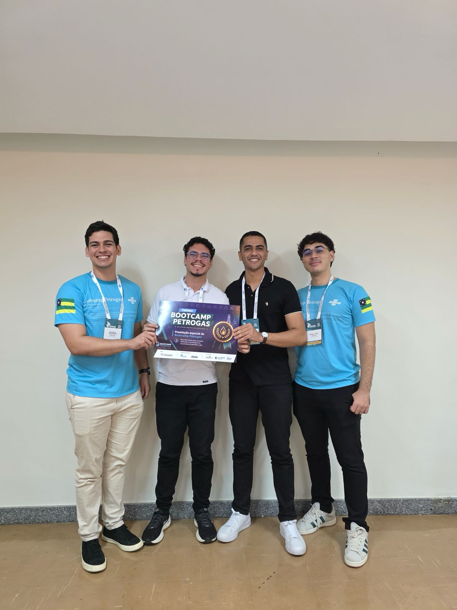
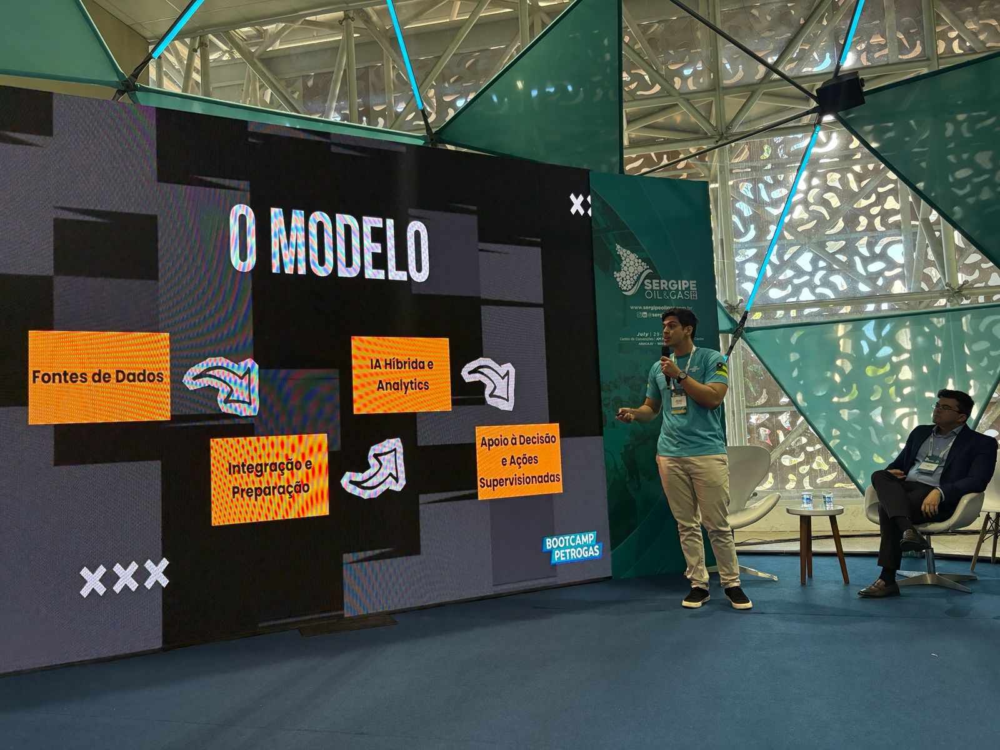
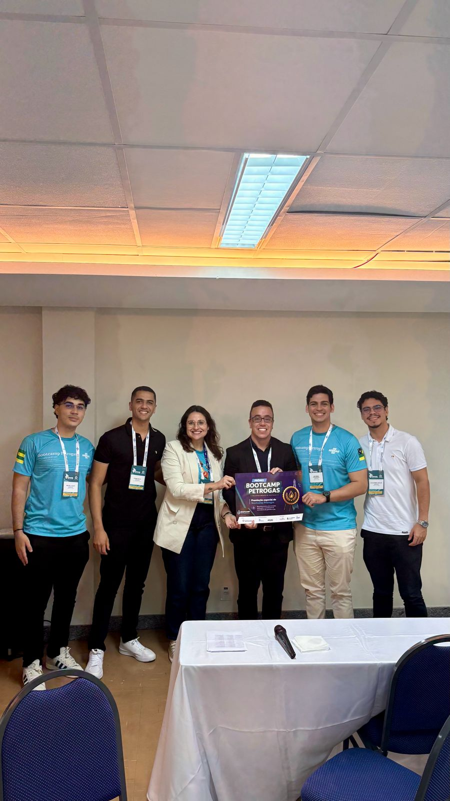
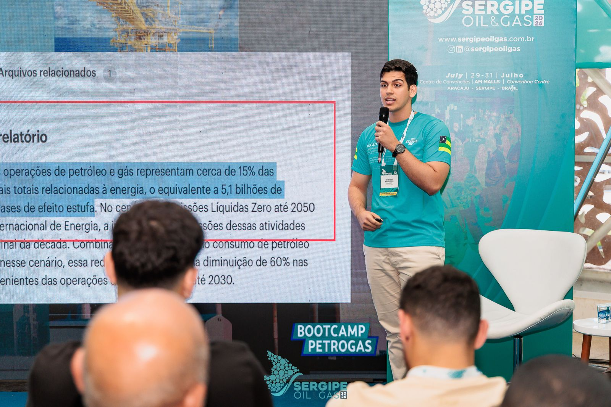
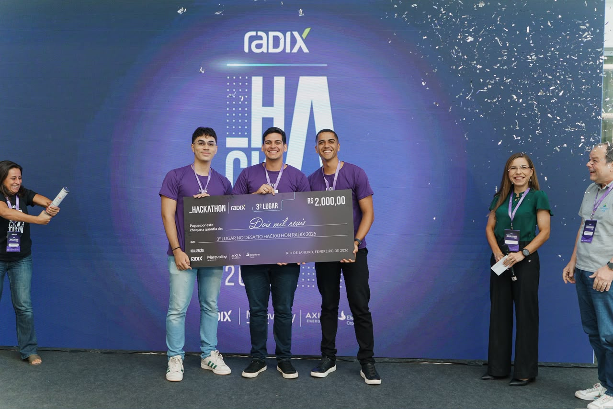
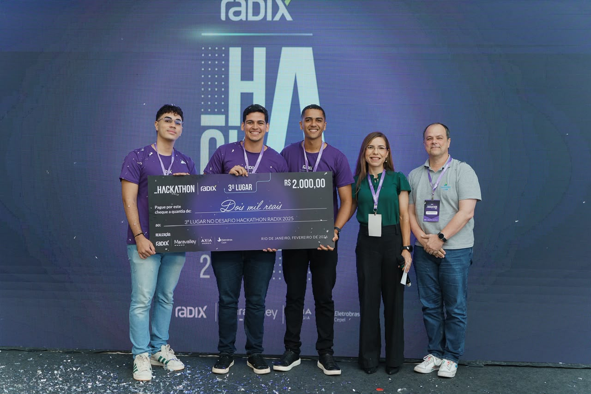
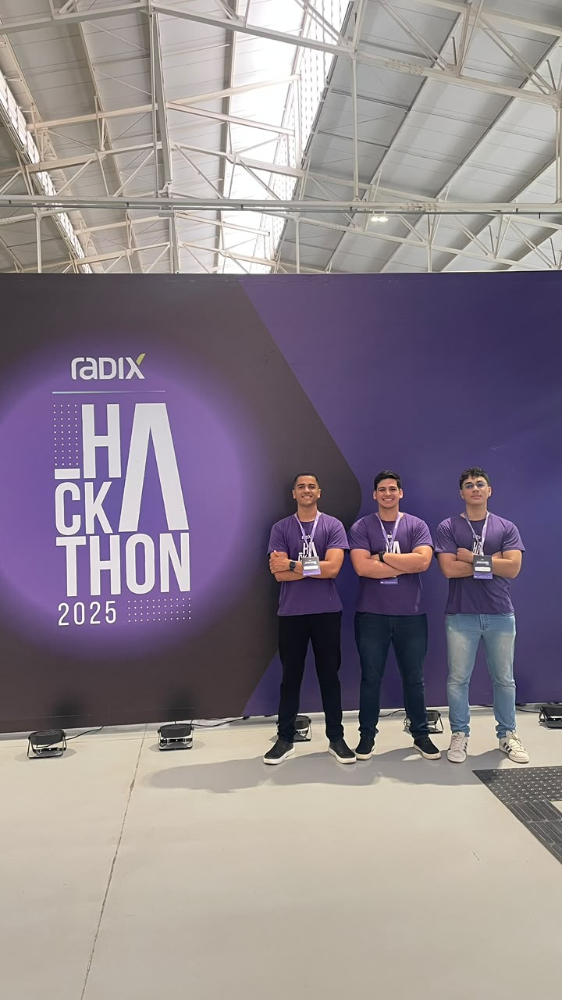

Análise Geoespacial & Territórios de Voronoi
Visualize áreas de influência, descubra lacunas de cobertura e priorize investimentos por proximidade real da rede.
POSTGIS ENGINE
Transforme perfis de consumo, inteligência territorial e sinais operacionais em decisões mais seguras para expansão, operação e investimento.

CAPACIDADE ATIVA
84.2 MW
LATÊNCIA MÉDIA
18ms
● Operacional
SUBESTAÇÕES
1,248 ↑
< 50ms
Latência Redis
99.9%
Precisão PostGIS
100%
Integração ANEEL
+50k
Subestações Mapeadas
Validação em campo
O GridScope nasceu para transformar dados de carga, consumo e ativos em planejamento acionável. Os painéis abaixo documentam o protótipo desenvolvido pela equipe OxenVolts: criticidade de subestações, perfil de carga e segmentação de mercado.


Da ideia ao reconhecimento
Premiação e apresentação da solução no Sergipe Oil & Gas 2026.




Reconhecimento nacional
Uma conquista nacional que reforça nossa capacidade de levar dados, IA e planejamento de carga a problemas operacionais complexos.



Plataforma completa
Uma base operacional para prever carga, simular cenários e escalar a rede com segurança.
Visualize áreas de influência, descubra lacunas de cobertura e priorize investimentos por proximidade real da rede.
Antecipe demandas e simule cenários operacionais com dados territoriais atualizados.
FastAPI + Redis L1 para análises críticas de planejamento em tempo real.
Carregue cenários e territórios sob demanda, sem reprocessar a plataforma.
Transforme dados geoespaciais complexos em relatórios claros e acionáveis.
Preview interativo
Escolha uma cidade para visualizar uma projeção de demanda de 24 horas, margem operacional e alertas para o planejamento da rede.
PROJEÇÃO DE CARGA • PRÓXIMAS 24H
DEMANDA PREVISTA
18.4 MW
PICO ESTIMADO
21.8 MW
MARGEM OPERACIONAL
16%
CURVA DE CARGA PROJETADA
Demanda horária • 00h — 24h
Arquitetura resiliente
Uma arquitetura industrial para operações que não podem parar, projetada para contexto geográfico e baixa latência.
01 / DATA
PostgreSQL 15 + PostGIS
Geometrias e análises espaciais
02 / CACHE
Redis 7 L1 Cache
Consultas em milissegundos
03 / SERVICE
FastAPI
API RESTful escalável
04 / INTELLIGENCE
Open-Meteo AI Pipeline
Clima, ANEEL e projeções
FAQ
Sim. A plataforma consolida dados públicos e indicadores relevantes da ANEEL para enriquecer os cenários de planejamento.
Os territórios são calculados a partir dos ativos da sua rede, revelando áreas de influência e proximidade de forma visual e consultável.
Sim. A API RESTful permite integrar simulações, ativos e resultados espaciais às suas ferramentas internas.
Sim. O pipeline combina fontes climáticas como Open-Meteo com dados históricos para construir projeções consistentes.
Vamos conversar?
Fale diretamente com nosso time pelo WhatsApp e conheça o GridScope.
Falar no WhatsApp